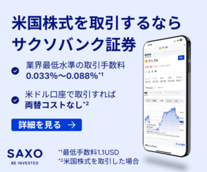
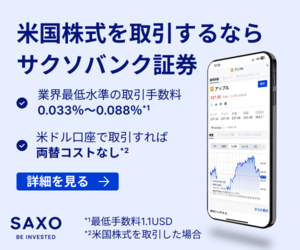
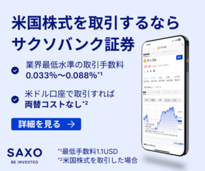
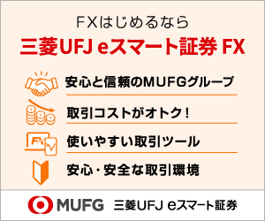
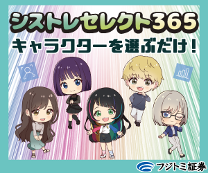
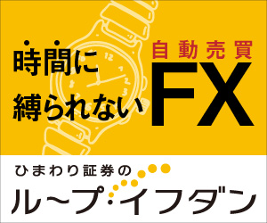
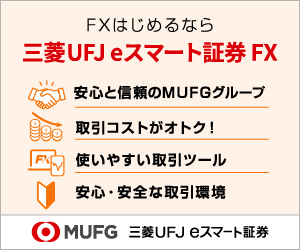
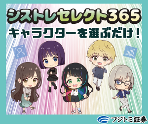
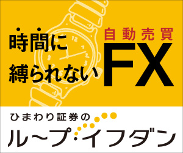

証券口座・FX口座・仮想通貨のおすすめ比較一覧（2025年版）
このサイトについて
株式投資・FX・仮想通貨の主要サービスを、初心者〜中級者向けに分かりやすく整理しています。
比較・基礎知識は、上のカテゴリメニューからすぐに移動できます。
初心者〜中級者向けおすすめ比較（結論早見表）
証券会社一覧(株式取引)
松井証券
初心者おすすめ DMM株初心者おすすめ
DMM株初心者おすすめ
.jfif) マネックス証券総合的サービス
トライオートCFD自動売買
マネックス証券総合的サービス
トライオートCFD自動売買
.png) Bloomo証券米国株やETF
moomoo証券海外株多め
Bloomo証券米国株やETF
moomoo証券海外株多め
 三菱UFJ eスマート証券auユーザーおすすめ

SAXO証券米国株多め
SBI証券ポイントサービス等
GMOクリック証券手数料が安い
三菱UFJ eスマート証券auユーザーおすすめ

SAXO証券米国株多め
SBI証券ポイントサービス等
GMOクリック証券手数料が安い
▲ページ上部へ戻る
初心者おすすめ
DMM株初心者おすすめ
Bloomo証券米国株やETF
moomoo証券海外株多め
三菱UFJ eスマート証券auユーザーおすすめ

SAXO証券米国株多め
SBI証券ポイントサービス等
GMOクリック証券手数料が安い
FX
LION FX
スキャルピング対応  三菱UFJ eスマート証券FXデモ取引機能あり  シストレセレクト365自動ツール系  ひまわり証券自動ツール系 松井証券FX自動ツール系.jpg) 外為ファイネスト自動ツール系
サクソバンク証券FX取引ツールが良質
外為ファイネスト自動ツール系
サクソバンク証券FX取引ツールが良質
▲ページ上部へ戻る
スキャルピング対応  三菱UFJ eスマート証券FXデモ取引機能あり  シストレセレクト365自動ツール系  ひまわり証券自動ツール系 松井証券FX自動ツール系
外為ファイネスト自動ツール系
サクソバンク証券FX取引ツールが良質
仮想通貨
▲ページ上部へ戻る


.png)

資産運用サービス
▲ページ上部へ戻る.png)
初心者向けの基礎知識解説ページ一覧
取引において見かける簡単な用語などメモ帳代わりにサックっと使えますのでブクマ推奨です。
すべて５分で読める内容なので時間もかかりません。
関連記事・おすすめページ
よくある質問（FAQ）
-
Q. 株とFX、どちらが初心者におすすめ？
初心者には、リスクが比較的低く情報が多い「株式投資」から始めるのがおすすめです。 -
Q. 仮想通貨は少額からでも始められますか？
はい、100円から取引可能な取引所もあり、初期コストが低いのが魅力です。 -
Q. 自動売買は初心者でも使えますか？
使いやすく設計された自動売買サービスもありますが、仕組みを理解してからの利用を推奨します。 -
Q. 無理な勧誘はありますか？
A. いいえ、一切ありません。 -
Q. 口座開設にかかる時間はどれくらい？
証券会社によって異なりますが、最短で即日〜3営業日程度が一般的です。 -
Q. NISAでは何から始めるのが無難？
つみたて投資枠でインデックス型の投資信託から始めるのが一般的です。短期売買よりも長期・分散・積立が基本です。 -
Q. 米国株の取引時間は？初心者の注意点は？
日本時間の夜間（プレ・通常・アフター）に取引されます。値動きが大きい時間帯は指値を活用し、為替や手数料も確認しましょう。 -
Q. 自分の“リスク許容度”はどう測ればいい？
目標期間・収入安定性・最大許容損失額で考えます。短期資金は投資に回さず、生活防衛資金を確保してから始めましょう。
運営方針について
当サイトは、運営者「ミルクティー情報発信」（Xアカウント：@QwZd0ksG2138610）が、個人で調査・運営しています。
実際に複数の証券口座・仮想通貨取引所・FXサービスを利用・比較し、公式情報をもとに中立的かつ分かりやすい情報発信を心がけています。
特定のサービスを不必要に推奨することなく、それぞれの特徴や注意点を読者目線で整理し、初心者の方にも理解しやすいよう努めています。
まとめ：最適な資産運用を選ぶために
資産運用には株・FX・仮想通貨など様々な選択肢がありますが、ご自身の投資スタイル・リスク許容度に応じて最適なサービスを選ぶことが重要です。
当サイトでは、引き続き初心者の方でも分かりやすく、実用的な情報を発信していきます。
更新履歴
- 2025年8月5日：サイトリニューアル
- 2025年7月26日：サイト調整
- 2025年7月23日：新規ページ作成
- 2025年7月14日：FX初心者解説ページ作成
- 2025年6月30日：申請許可を頂いたリンクバナーの実装、文章調整
- 2025年6月28日：サイト内記事の確認修正等
- 2025年6月18日：サイトデザイン調整
ごあいさつと方針
当サイトは、証券・FX・仮想通貨といった金融分野を中心に、初心者にも分かりやすく、実際に使える情報を届けることを目的としています。
難しい専門用語もなるべくかみ砕いて解説し、あなたの資産形成の一助となれるよう、日々アップデートに努めてまいります。